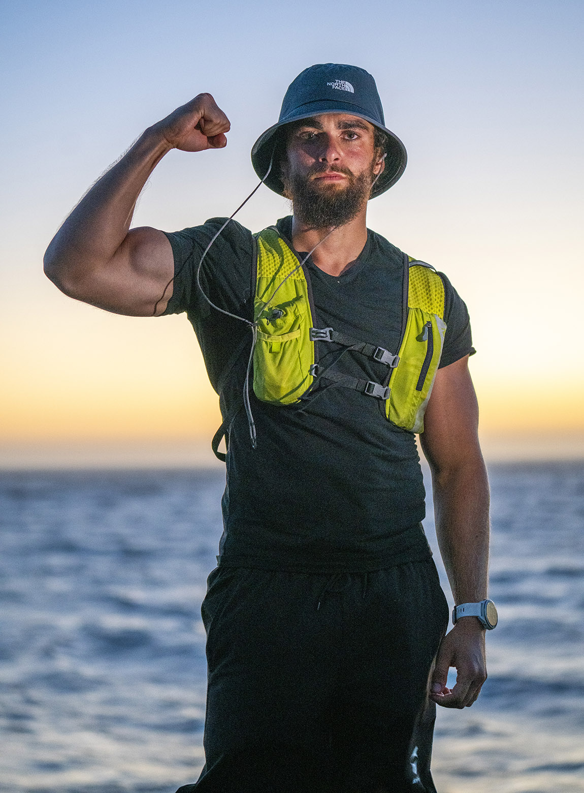

Arda Saatcı: El hombre que unió continentes corriendo
No todos los récords se rompen en una pista de atletismo. El ultra-maratonista Arda Saatcı ha redefinido los límites de la resistencia humana con su más reciente evento: una travesía épica desde Estambul hasta Roma.
Corriendo una media de casi dos maratones diarios, Arda cruzó fronteras y climas implacables para completar los casi 3,000 kilómetros que separan ambas capitales históricas. Su llegada al Coliseo Romano no solo marcó un récord personal de velocidad para esta ruta, sino que envió un mensaje al mundo sobre la capacidad del espíritu humano para superar el dolor y la fatiga extrema.
"El límite no es el cuerpo, es la mente la que decide cuándo detenerse."
Andrzej Bargiel: El hombre que esquió la "Montaña Salvaje"
Mientras la mayoría de los alpinistas consideran la cima del K2 como el final de su viaje, para el polaco Andrzej Bargiel es solo el principio. En 2018, Bargiel asombró al mundo al lograr el primer descenso integral en esquís desde la cumbre del K2 hasta la base.
A más de 8,000 metros de altura, en una de las zonas más mortíferas del planeta conocida como la "Zona de la Muerte", Andrzej ajustó sus fijaciones y se lanzó por pendientes de hielo verticales que nadie se había atrevido a esquiar antes. Su hazaña no solo requirió una técnica impecable, sino una valentía que redefine el concepto de deporte extremo.
"Para mí, esquiar es la forma más natural de bajar de una montaña. Es donde me siento más libre."